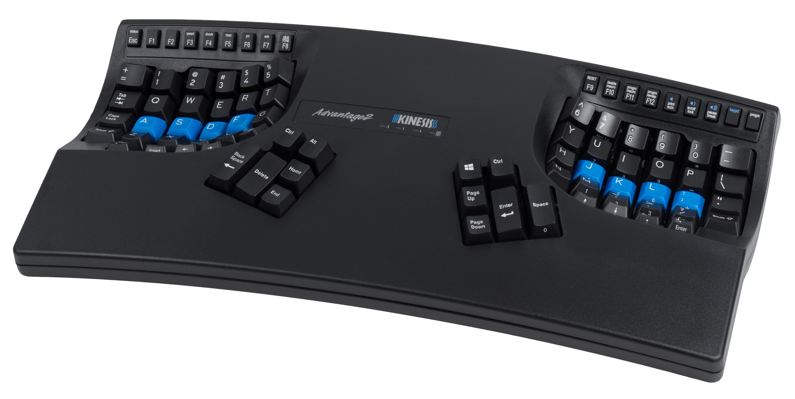
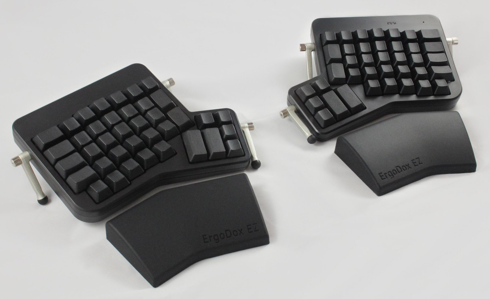
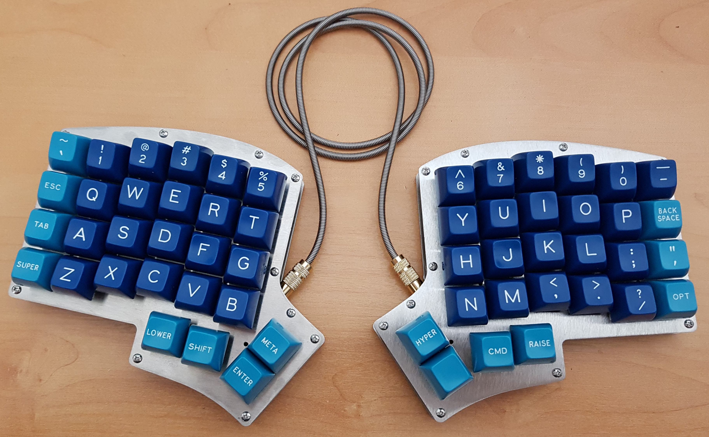
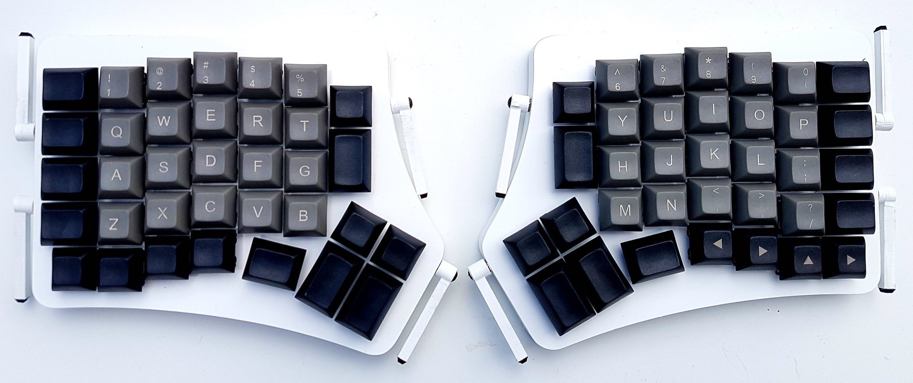
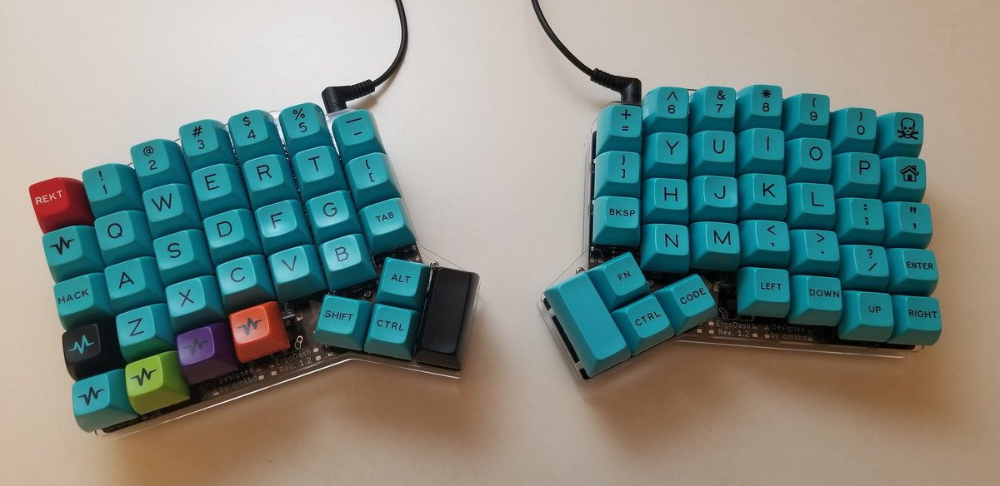
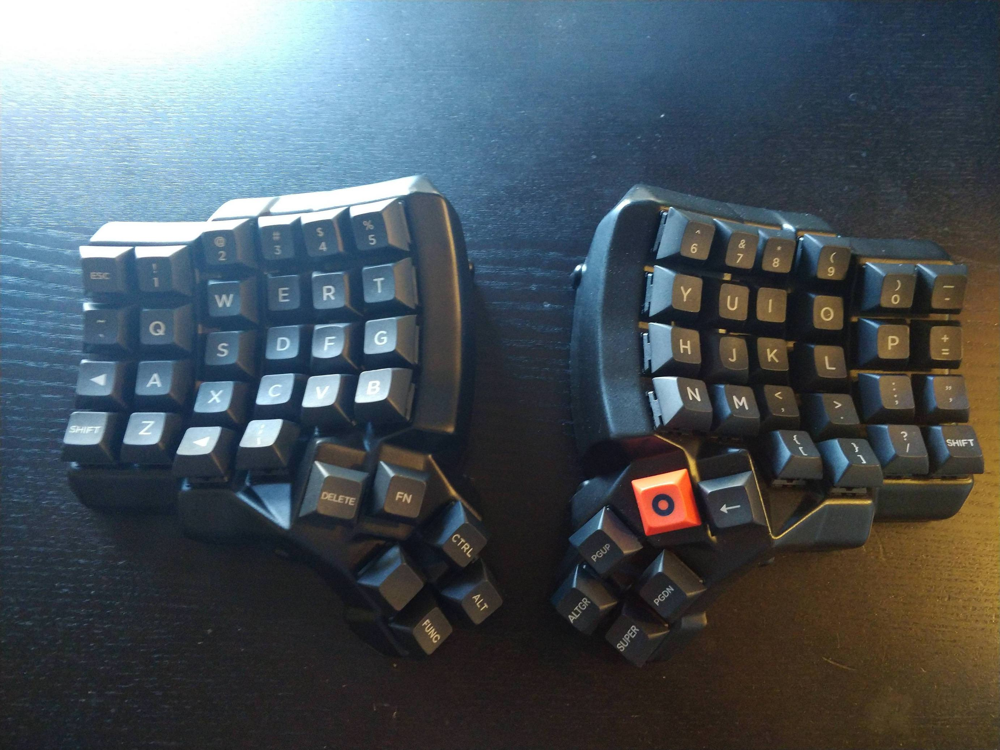

Dactyl Manuform I — Why a Dactyl?
Two years after my titanium bike, the custom build bug has once again bitten me. This time it's a keyboard.
This idea started several weeks ago when I felt some mild yet alarming pain in my left thumb. I did a lot of window switching that day, and my thumb was constantly scrunched up to hit the windows key. I spent the next few weeks remapping my OS shortcuts with AutoHotKey, but never arrived at anything satisfactory. I realized that an OS translation layer can only go so far, and at some point I need an actual programmable keyboard, which had been quietly suggested to me by a co-worker.
So I did some research into what's available in the ergonomic programmable keyboard space. At this point I wasn't sure at all what I was looking for. Throughout my search, I came very close to purchasing something suboptimal.
Kinesis Advantage 2

I first looked up the Kinesis Advantage 2. A former co-worker of mine had one of these on his desk for several years and seemed quite satisfied with it. I like the idea of the column-staggered layout, the concave depression looks ergonomic, and it has a thumb cluster. It's pricey ($319), but that wasn't what turned me off.
{kind=link}
Frankly, I think it looks atrocious. It's this ginormous block of unused grey plastic, with an off-centered logo that looks like it came from the 80s. I filed this away in the "over my dead fingers" category.
Ergodox EZ

This was the keyboard highly praised by my coworker. He said he uses an Ergodox and loves it. I visited their page and was immediately impressed. It's almost the opposite of the kinesis. There's not much unused plastic since the two halves are split apart then connected by a cable. It's also column-staggered, has a thumb cluster, is very minimalist with basically no logos, is run on open source programmable firmware (QMK), and has sweet tenting and wrist rest options. It's also pricey ($~350) with options that I wanted. I actually came really close to ordering this puppy outright. What stopped me was some reviews about the thumb cluster being sorta too far away from the thumbs. I have relatively large hands, however the whole point of this exercise was to make my thumbs more comfortable. I was afraid I was trading "thumb-scrunching" for "thumb-stretching".
Iris

That stainless steel chassis and cable are drool-worthy
So I did some more research on ergonomic keyboards, and this is the moment when I fell irrevocably down the rabbit hole. I would say it was a similar moment to when I discovered the spanner bikes website where people posted their custom titanium frames. It turns out there's an entire sub-culture around custom built mechanical keyboards. For awhile, I was seriously considering a custom built Iris keyboard from keeb.io. Despite being custom-built, it would have actually been cheaper than the other options at around $150, which seemed like a great price. This design solved the thumb cluster issues by moving those buttons much closer. I also loved the ultra minimalist look of it, and was excited to have a keyboard with no chassis, just two stainless steel plates.
What stopped me here was that there were just too few keys. I played around with the QMK layout editor and just couldn't find a setup that wouldn't change things up too much for me. I wanted a column-staggered keyboard with a comfortable thumb cluster, but I didn't want so many keys stripped away that I would need to relearn where things like minus/underscore, tilde, brackets, etc. were.
Redox / Ergodash

Redox, a "reduced ergodox"

Ergodash
Searching around more, I found the Redox and Ergodash keyboard designs. These were basically in between the Iris and the original Ergodox, in that didn't reduce the keys as much as the Iris, and they also had ergonomically closer thumb clusters.
The problem with these guys is that the only guys I could find with a website selling fully-built versions were this company called FalbaTech in the EU which only sold expensive versions made of bamboo. I just don't really like that aesthetic, and wish they would offer something more standard like plastic, acrylic, or metal.
Dactyl Manuform

Dactyl Manuform 5x6
Somewhere about 5000 meters down in this rabbit hole, I stumbled upon some reddit posts that spoke almost reverently about something called a Dactyl. This led me to a quite informative and inspiring video about this one Two Sigma developer's journey to find, and ultimately make the perfect ergonomic keyboard. The "end-game" keyboard—a sub-culture term for the perfect keyboard that satisfies you so fully that you never desire another one. Hah, reminds me of the N+1 bike rule from that other subculture I'm into (see my titanium bike build).
This keyboard... has it all. It's column-staggered, it has an ergonomic thumb cluster, it can be configured with a custom number of rows/columns, and it has a concave shape like the kinesis. The only problem, its concave shape means it cannot be constructed with a standard flat PCB, it must be hand-wired, so mass-manufacturing attempts have never taken off. The only ways you can buy this are from custom artisanal builders lurking on the sub-reddit with wait-times of months.
I was ready to fork down several hundred for a custom version of this keyboard, but with the coronavirus, some of them weren't even taking orders. Furthermore, because this keyboard must be 3D-printed, it's finish is pretty... rough. Like imagine that "thing" your coworker 3D printed and brought to work, except your whole keyboard is that. There are options to print it out of a higher quality resin, and some builders offer paint services, but if I want a perfect finish, the only way to do this would be to buy/print a case myself, then sand/paint it myself.
Thus we embark on another full-custom adventure.